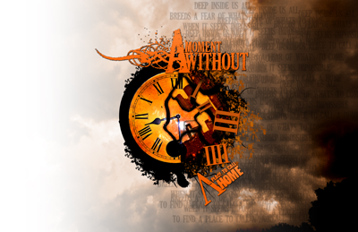
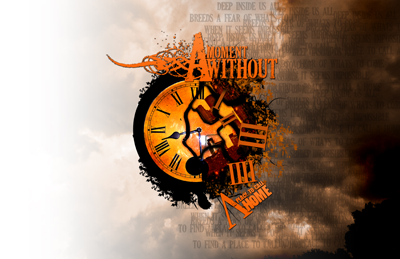

In the summer of 2009, James Sanders from A Moment Without contacted me to work on there band project. Through references he was impressed and wanted to see what I could do. After first branding the band came the important part of finding the symbol that would represent the bands disc. Through several rounds of concepts with the guys, we had concepted an idea of a clock to be the symbol. After a breifing with the band I started on the creative portion of the design, creating the idea of time falling off the clock. In the midst of the chaos, the clock is falling apart representing the scene and trying to revive it. I added several key features such as Minneapolis Skyline in the clock, the deteriorating part of the clock is actually symbols of the state (Minnesota).
With that idea really helped pull together the design and idea they were going for. A scene in chaos falling apart, admist the logo being top point to represent pulling it together. With the title, A Place to Call Home is a statement that we love our state and lets do this together.